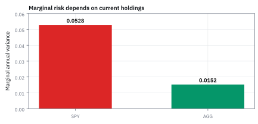
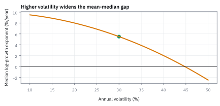
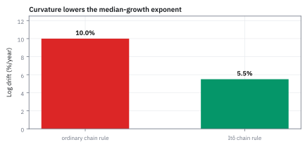
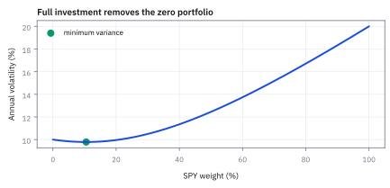

12.2 The Gradient and First-Order Conditions
gradient บอกว่าขยับน้ำหนักแต่ละตัวนิดหนึ่งแล้วความเสี่ยงของพอร์ตที่ถืออยู่เปลี่ยนเท่าไร และที่จุดต่ำสุดมันต้องหมดแรงผลักในทุกทิศที่อนุญาต
พอร์ต 60/40 ของหุ้น (SD ปีละ 20%) กับพันธบัตร (SD 10%) correlation 0.30 มีความผันผวน 13.74% ต่อปี เทรดเดอร์คนหนึ่งขอเพิ่ม exposure หุ้นอีก 1% ของ NAV โดยกู้เงินสด (ดอกเบี้ยรู้แน่นอน จึงไม่เพิ่ม variance) อีกคนขอเพิ่มพันธบัตร 1% แบบเดียวกัน หัวหน้าบอกว่าหุ้นผันผวนเป็นสองเท่าของพันธบัตร คำขอแรกจึงควรเพิ่มความเสี่ยงเป็นสองเท่าของคำขอที่สอง ถูกไหม?
ลองตอบก่อนเปิดเฉลย
ไม่ถูก คำขอแรกเพิ่มความผันผวนของพอร์ต 0.192 จุด คำขอที่สองเพิ่มแค่ 0.055 จุด ต่างกัน 3.47 เท่า ไม่ใช่ 2 เท่า สิ่งที่นับไม่ใช่ SD ของสินทรัพย์ แต่คือ covariance ของสินทรัพย์นั้นกับพอร์ตที่ถืออยู่ ซึ่งคือ 0.0264 กับ 0.0076 พอร์ตนี้มีหุ้นอยู่แล้ว 60% หุ้นก้อนใหม่จึงขยับไปกับของเดิมเต็ม ๆ ตัวเลขชุดนี้คือ gradient ของความเสี่ยง
สิ่งที่เราจะสร้าง
12.1 ใช้ความชันของตัวแปรเดียวหาผู้สมัครเป็นจุดต่ำสุด หน้านี้ขยายเป็นหลายตัวแปร ความชันกลายเป็น vector หนึ่งช่องต่อหนึ่งสินทรัพย์ เรียกว่า gradient และตอบได้ทั้งคำถามของเทรดเดอร์ ทิศที่ความเสี่ยงลดเร็วที่สุด และเงื่อนไขที่จุดต่ำสุดต้องผ่าน
เราจะหา partial derivative ด้วยมือก่อน แล้วพิสูจน์สูตร $\nabla q=2Vx$ สำหรับกี่สินทรัพย์ก็ได้ ใช้มันทำนาย trade ดูว่าพลาดเท่าไรเมื่อ trade ใหญ่ขึ้น แปลงเป็นหน่วยความผันผวน หาทิศลงชันที่สุด แล้วตั้งเงื่อนไขอันดับหนึ่ง ทั้งแบบไม่มีข้อจำกัดซึ่งให้คำตอบที่ใช้ไม่ได้ และแบบลงเงินครบซึ่งให้กฎ “marginal risk เท่ากันทุกตัว”
ศัพท์ที่ใช้ในหัวข้อนี้
- Partial derivative
- อัตราเปลี่ยนของ function เมื่อขยับตัวแปรตัวเดียวและตรึงตัวอื่นไว้ ใช้ตอบว่าเพิ่มน้ำหนักสินทรัพย์ตัวนี้ตัวเดียวแล้วเกิดอะไร
- Gradient
- vector ที่เรียง partial derivative ทุกตัว ชี้ทิศที่ function ขึ้นเร็วที่สุด ความยาวบอกว่าขึ้นเร็วแค่ไหน
- Marginal risk
- ความเสี่ยงส่วนเพิ่มต่อการเพิ่มน้ำหนักทีละนิด ณ พอร์ตปัจจุบัน ใช้ตั้งราคาความเสี่ยงของคำขอเทรด
- Directional derivative
- อัตราเปลี่ยนเมื่อเดินไปตามทิศที่เลือก เช่นขายพันธบัตรพร้อมซื้อหุ้น ใช้ประเมิน trade ที่ขยับหลายน้ำหนักพร้อมกัน
- Linear approximation
- การทำนายผลด้วยเส้นสัมผัสจากจุดปัจจุบัน แม่นกับ trade เล็ก พลาดมากขึ้นตามกำลังสองของขนาด trade
- First-order condition
- เงื่อนไขว่าที่จุดต่ำสุด ความชันต้องไม่มีทิศที่อนุญาตให้ลดต่อได้ ใช้หาผู้สมัครเป็นคำตอบ
สัญลักษณ์และหน่วย
| สัญลักษณ์ | ความหมาย | หน่วย |
|---|---|---|
| $x=(x_1, x_2)^{\mathsf T}$ | น้ำหนักหุ้นและพันธบัตร เป็น exposure หารด้วย NAV | สัดส่วนของ NAV |
| $V$ | covariance ของผลตอบแทนรายปี (12.1) | return² ต่อปี |
| $q(x),\ \sigma_p$ | variance และ SD ของพอร์ตต่อปี | return² และ return |
| $\nabla q$ | gradient ของ variance เทียบน้ำหนัก | return² ต่อหนึ่งหน่วยน้ำหนัก |
| $d,\ \delta$ | การเปลี่ยนน้ำหนักทั้ง vector และขนาดของการสลับ | สัดส่วนของ NAV |
| $e_k,\ u$ | vector ที่มี 1 อยู่ช่อง $k$ และทิศความยาว 1 | ไม่มีหน่วย |
| $a$ | น้ำหนักหุ้นเมื่อลงเงินครบ (พันธบัตรได้ $1-a$) | สัดส่วนของ NAV |
ขั้นที่ 1 — partial derivative ทีละพจน์ของพอร์ตสองตัว
เริ่มจากกรณีจริงก่อนสูตรทั่วไป variance ของพอร์ตจาก 12.1 คือ $q(x)=0.04x_1^2+0.012x_1x_2+0.01x_2^2$ partial derivative เทียบ $x_1$ คือขยับ $x_1$ นิดเดียวโดยถือ $x_2$ เป็นค่าคงที่
ในแถวแรก พจน์ $0.04x_1^2$ ให้ $0.08x_1$ แบบ $d(ax^2)/dx=2ax$ พจน์กลางเป็นเส้นตรงใน $x_1$ เพราะ $x_2$ ถูกตรึง จึงเหลือตัวคูณ $0.012x_2$ พจน์สุดท้ายไม่มี $x_1$ เลย ขยับ $x_1$ แล้วไม่กระดิก
ดึงเลข 2 ออกแล้ววงเล็บที่เหลือคือ $V$ คูณ $x$ พอดี นี่คือ $2ax$ ของหนึ่งมิติในร่าง matrix ขั้นถัดไปพิสูจน์ว่าจริงกับสินทรัพย์กี่ตัวก็ได้
ขั้นที่ 2 — กางพอร์ตหลัง trade ออกตรง ๆ แล้วได้ทั้ง gradient และตัวคลาดเคลื่อน
แทนที่จะกระจายผลรวมสองชั้นทีละพจน์ ให้ถามคำถามที่เทรดเดอร์ถามจริง: ถ้าเปลี่ยนน้ำหนักไป $d$ variance ใหม่เป็นเท่าไร กางวงเล็บตรง ๆ โดยใช้ว่า $V$ สมมาตร
บรรทัดที่สามรวมสองพจน์กลาง เพราะ $x^{\mathsf T}Vd$ เป็นตัวเลขตัวเดียว จึงเท่ากับ transpose ของตัวเอง $d^{\mathsf T}V^{\mathsf T}x$ และ $V^{\mathsf T}=V$ จากนั้นเลือก $d$ ให้ขยับช่องเดียว หารด้วย $h$ แล้วให้ $h$ เล็กลงจนหาย ได้ช่องที่ $k$ ของ $\nabla q=2Vx$
บรรทัดที่สามยังให้ของแถม: สำหรับ objective กำลังสอง ความคลาดของการทำนายด้วยเส้นตรงไม่ต้องประมาณ มันคือ $d^{\mathsf T}Vd$ เป๊ะ ซึ่งคือ variance ของพอร์ต $d$ เอง
ขั้นที่ 3 — แทนพอร์ต 60/40
โจทย์ให้อะไรมาบ้าง: $x=(0.6, 0.4)$ และ $V$ ของ 12.1 คือทแยง 0.04, 0.01 และนอกทแยง 0.006 คูณแถวของ $V$ กับน้ำหนักก่อน แล้วค่อยคูณสอง
คำตอบ: gradient คือ $(0.0528, 0.0152)$ หุ้นแพงกว่า $0.0528/0.0152\approx3.474$ เท่า ทั้งที่ SD ต่างกัน 2 เท่า ช่องที่ $i$ ของ $Vx$ คือ covariance ของสินทรัพย์ $i$ กับพอร์ตทั้งก้อน (8.8) หุ้นขยับไปกับพอร์ตนี้ 0.0264 พันธบัตรแค่ 0.0076 เปลี่ยนพอร์ต ตัวเลขก็เปลี่ยน
ตรวจเองใน 10 วินาที: น้ำหนักคูณ gradient ต้องได้สองเท่าของ variance เพราะ $x^{\mathsf T}(2Vx)=2q$: $0.6(0.0528)+0.4(0.0152)=0.03168+0.00608=0.03776=2(0.01888)$
Figure 12.2a — variance ส่วนเพิ่มที่พอร์ต 60/40

ขั้นที่ 4 — ทำนาย trade แล้ววัดว่าพลาดเท่าไร
โจทย์ให้อะไรมาบ้าง: คำขอแรกของโจทย์เปิดเรื่องคือ $d=(0.01, 0)$ เงินที่ใช้ซื้อมาจากการกู้เงินสดซึ่งไม่มี variance ใช้บรรทัดที่สามของขั้นที่ 2 แยกส่วนทำนายกับส่วนความโค้ง แล้วลองขนาด 10% เทียบ
คำตอบ: ที่ 1% เส้นตรงทำนายได้ 99.25% ของผลจริง ที่ 10% พจน์ความโค้งโตเป็น 100 เท่า (0.0004) และเส้นตรงพลาด 7.04% ของผลจริง เพราะส่วนที่ทิ้งไปโตตามกำลังสองของขนาด trade กฎบนโต๊ะคือใช้ marginal risk กับการปรับเล็ก ๆ ส่วนก้อนใหญ่ให้คำนวณพอร์ตใหม่ทั้งก้อน ซึ่งสำหรับ variance ก็แค่บวก $d^{\mathsf T}Vd$
ตรวจเองใน 10 วินาที: คำนวณตรงที่ $(0.61, 0.40)$: $0.04(0.3721)+0.012(0.244)+0.01(0.16)=0.014884+0.002928+0.0016=0.019412$ ลบ 0.01888 ได้ 0.000532 ตรงกัน
Figure 12.2b — เส้นสัมผัสเริ่มพลาดเมื่อ trade ใหญ่ขึ้น

ขั้นที่ 5 — แปลงเป็นหน่วยความผันผวนที่คนคุยกันจริง
0.0528 เป็นอัตราเปลี่ยนของ variance ซึ่งเป็นหน่วยกำลังสอง ไม่มีใครพูดในห้องประชุมว่า “variance ขึ้น 0.000528” จึงใช้ chain rule กับ $\sigma_p=\sqrt q$
เพิ่มหุ้น 1% ความผันผวนขึ้นราว $0.01\times0.192133=0.1921$ จุด คำนวณตรงได้ $\sqrt{0.019412}\approx13.9327\%$ ขึ้น 0.1922 จุด เพิ่มพันธบัตร 1% ขึ้นราว 0.0553 จุด (ตรง 0.0556) อัตราส่วนยังเป็น 3.474 เพราะหารด้วย $\sigma_p$ ตัวเดียวกัน
สองบรรทัดล่างคือ risk contribution ของ 8.8: รวมกันได้ 0.137405 เท่ากับ $\sigma_p$ พอดี หุ้นใช้เงิน 60% แต่แบกความเสี่ยง 83.90% ระวังตัวหาร: gradient ของ variance คือ $2Vx$ แต่ของ SD คือ $Vx/\sigma_p$ ไม่มีเลข 2
ขั้นที่ 6 — ทิศไหนลดความเสี่ยงเร็วที่สุด
ถ้าเดินไปทิศ $u$ ความยาว 1 ด้วยระยะ $t$ ขั้นที่ 2 บอกผลเปลี่ยนเป๊ะ หารด้วย $t$ แล้วให้ $t$ เล็กลง ได้อัตราเปลี่ยนตามทิศนั้น แล้วใช้ Cauchy–Schwarz จาก 6.5 หาว่าทิศไหนให้อัตราติดลบมากที่สุด
dot product ของสอง vector ติดลบได้มากที่สุดเท่ากับผลคูณความยาว และเกิดเมื่อสองตัวชี้สวนกันพอดี ทิศลงชันที่สุดจึงเป็น $-\nabla q$ ลูกศร gradient ชี้ขึ้น เดินสวนมันคือเดินลง นี่คือที่มาของชื่อ gradient descent
แต่อ่านตัวเลขดู: $u^\star$ สั่งขายทั้งหุ้นและพันธบัตร คือหดพอร์ตไปถือเงินสด ถูกทางคณิตศาสตร์สำหรับ objective ที่เขียนไว้ แต่ผิดโจทย์ของกองทุนที่ต้องลงเงินครบ ทิศที่เคารพงบคือขายตัวหนึ่งซื้ออีกตัว $u=(1, -1)/\sqrt2$ ซึ่งมีอัตรา $(0.0528-0.0152)/\sqrt2\approx0.0266$
Figure 12.2c — gradient ตัดเส้นระดับความเสี่ยงเป็นมุมฉาก

ขั้นที่ 7 — เงื่อนไขอันดับหนึ่งแบบไม่มีข้อจำกัด: คำตอบถูกแต่ใช้ไม่ได้
12.1 บอกว่าจุดต่ำสุดภายในที่เรียบต้องมีความชันศูนย์ ในหลายตัวแปรหมายถึงทุกช่องของ gradient เป็นศูนย์ ลองตั้งดูโดยไม่ใส่ข้อจำกัดอะไร
determinant ไม่เป็นศูนย์ $V$ จึง invertible (7.5) และสมการ $Vx=0$ มีคำตอบเดียวคือ vector ศูนย์ variance ต่ำสุดคือ 0 เมื่อไม่ถืออะไร ซึ่งเป็นคำตอบที่ถูกของคำถามที่ผิด นี่คือเหตุผลที่โจทย์พอร์ตจริงต้องมีข้อจำกัดเสมอ
ขั้นที่ 8 — ลงเงินครบ: marginal risk ต้องเท่ากันทุกตัว
เมื่อบังคับให้น้ำหนักรวมเป็น 1 ทิศที่อนุญาตมีแค่การสลับ: ขายตัวหนึ่ง $\delta$ ซื้ออีกตัว $\delta$ ใช้ขั้นที่ 2 กับ $d=(\delta, -\delta)$
ที่ 60/40 ขายหุ้น 1% ซื้อพันธบัตร 1% ลด variance ได้ 0.0003722 ความผันผวนลงจาก 13.7405% เป็น 13.6043% พอร์ต 60/40 จึงไม่ใช่จุดต่ำสุด ถ้า partial derivative สองตัวไม่เท่ากัน สลับนิดเดียวไปทางตัวที่ถูกกว่าก็ลดได้เสมอ เพราะพจน์ $\delta^2$ เล็กกว่าพจน์ $\delta$ เมื่อ $\delta$ เล็ก
จุดต่ำสุดที่ลงเงินครบจึงต้องมี partial derivative เท่ากัน แทน $x=(a, 1-a)$ แล้วแก้
ได้หุ้น 10.53% เท่ากับที่ 12.1 ได้จากการแทน $x_2=1-x_1$ สองวิธีตอบตรงกัน ค่าร่วม 0.019158 เท่ากับ $2q^\star=2(0.0095789)$ เพราะ $x^{\mathsf T}\nabla q=2q$ และเมื่อทุกช่องเท่ากันกับน้ำหนักที่รวมกันได้ 1 ผลรวมก็คือค่าร่วมนั้นเอง 12.4 จะตั้งชื่อค่านี้ว่า Lagrange multiplier
Figure 12.2d — บนเส้นลงเงินครบ ความผันผวนต่ำสุดที่หุ้น 10.53%

ขั้นที่ 9 — สูตรปิดของสองสินทรัพย์ และเส้นแบ่ง correlation 0.5
ทำขั้นที่ 8 ซ้ำด้วยตัวอักษร จะได้สูตรที่ใช้กับคู่ไหนก็ได้ และตอบได้ว่าเมื่อไรสินทรัพย์ที่ผันผวนกว่าไม่ควรมีที่ในพอร์ตความเสี่ยงต่ำสุด
ตัวส่วนคือ variance ของพอร์ต “หุ้น 1 ลบพันธบัตร 1” ซึ่งเป็นบวกเมื่อสองตัวไม่ซ้ำกัน เครื่องหมายของ $a$ จึงขึ้นกับตัวเศษอย่างเดียว หุ้นยังมีที่ในพอร์ตความเสี่ยงต่ำสุดก็ต่อเมื่อ correlation ต่ำกว่าอัตราส่วน SD คือ 0.5
ที่ $\rho=0.5$ พอดี $V_{12}=0.01=V_{22}$ คำตอบคือพันธบัตรล้วน และ gradient ที่ $(0, 1)$ คือ $(0.02, 0.02)$ เท่ากันตามกฎ ที่ $\rho=0.8$ คำตอบคือ short หุ้น 1/3 ตรงกับโจทย์ข้อ 2 ของ 12.1
คำถามที่ควรถามออกมาดัง ๆ
สินทรัพย์ที่ผันผวน 30% ลดความเสี่ยงพอร์ตได้ไหม? ได้ ถ้ามันสวนทางกับพอร์ต สมมติมีตัวที่สาม SD 30% correlation −0.6 กับหุ้นและ 0 กับพันธบัตร ยังไม่ได้ถือ covariance ของมันกับพอร์ต 60/40 คือ $0.6(-0.6)(0.3)(0.2)=-0.0216$ gradient ช่องนี้จึงเป็น −0.0432 เพิ่ม 1% ลด variance 0.000432 หักความโค้ง 0.000009 เหลือลด 0.000423 ความผันผวนลงเป็น 13.5857% SD สูงไม่ได้แปลว่าเพิ่มความเสี่ยง ต้องดูเครื่องหมายของ marginal risk
ทำไมทิศลงชันที่สุดไม่ใช่คำตอบ? เพราะมันบอกแค่ทิศที่ดีที่สุดตรงจุดที่ยืนเท่านั้น และไม่รู้จักงบประมาณ ขั้นที่ 6 ชี้ให้ขายทั้งคู่ ขั้นที่ 8 ต้องเลือกเฉพาะทิศที่อนุญาตก่อน แล้วจึงถามว่าทิศไหนลง
กับดัก: ตัวเลขถูก แต่หน่วยหรือที่มาของเงินผิด
0.0528 เป็น variance ต่อหน่วยน้ำหนัก ไม่ใช่ความผันผวนและไม่ใช่เงิน ถ้าอยากพูดเป็นเงินต้องใช้ความไวของ SD: บน NAV \$100 ล้าน เพิ่มหุ้น 1% ทำให้ SD ของ P&L รายปีขึ้นราว $0.001921\times\$100$ ล้าน $\approx\$192{,}133$ (คำนวณตรง \$192,244) เอา 0.0528 คูณ NAV ได้ \$5.28 ล้าน ซึ่งไม่มีความหมายอะไรเลย
ลืมเลข 2 แล้วรายงาน $Vx$ เป็น gradient ของ variance ทุกตัวจะเล็กไปครึ่งหนึ่ง แต่อัตราส่วนระหว่างสินทรัพย์ยังถูก การจัดอันดับจึงดูสมเหตุสมผลและรอดสายตาได้นาน กลับกัน ถ้าเอา $2Vx/\sigma_p$ ไปเป็นความไวของ SD จะใหญ่ไปสองเท่า
“เพิ่มหุ้น 1%” ต้องบอกว่าเงินมาจากไหน กู้เงินสดมาซื้อเพิ่มความผันผวน 0.192 จุด แต่ขายพันธบัตร 1% มาซื้อเพิ่มแค่ราว 0.137 จุด (ตรง 0.1375) เพราะขาขายช่วยหักลบ สองคำขอฟังเหมือนกันแต่เป็นคนละ $d$
ใช้ทำอะไรบนโต๊ะจริง
ตาราง marginal risk ต่อ 1% ของแต่ละสินทรัพย์ ณ พอร์ตวันนี้ คือราคาความเสี่ยงภายในที่ใช้ตอบคำขอเทรดทันทีโดยไม่ต้องรัน optimizer และต้องคำนวณใหม่ทุกครั้งที่พอร์ตเปลี่ยนมาก เพราะมันขึ้นกับ $x$ รายงานแบ่งความเสี่ยงในบทหลัง (26.4) ก็คือ $x_i\,\partial\sigma_p/\partial x_i$ ของขั้นที่ 5
การตรวจว่าพอร์ตเป็นความเสี่ยงต่ำสุดหรือยังก็ง่าย: ดูว่า marginal variance ของทุกตัวที่ถือเท่ากันไหม ที่ 60/40 ต่างกัน 0.0528 กับ 0.0152 จึงยังลดได้ ที่ 10.53/89.47 เท่ากันที่ 0.019158
สามโจทย์ตรวจความเข้าใจ
1. ที่พอร์ต 50/50 gradient ของ variance และความไวของ SD เป็นเท่าไร หุ้นแพงกว่าพันธบัตรกี่เท่า?
เฉลย
$Vx=(0.04(0.5)+0.006(0.5),\ 0.006(0.5)+0.01(0.5))=(0.023, 0.008)$ gradient $(0.046, 0.016)$ variance $0.5(0.023)+0.5(0.008)=0.0155$ SD 12.4499% ความไวของ SD $0.023/0.124499\approx0.18474$ กับ $0.008/0.124499\approx0.06426$ แพงกว่า 2.875 เท่า น้อยกว่าที่ 60/40 เพราะพอร์ตมีหุ้นน้อยลง หุ้นแบกความเสี่ยง 74.19%
2. ที่ 60/40 ขายพันธบัตร 5% ไปซื้อหุ้น variance เปลี่ยนเท่าไร และเส้นตรงพลาดเท่าไร?
เฉลย
$d=(0.05, -0.05)$ ส่วนเส้นตรง $0.05(0.0528-0.0152)=0.00188$ ส่วนความโค้ง $0.05^2(0.04+0.01-0.012)=0.0025(0.038)=0.000095$ รวม 0.001975 ความผันผวนขึ้นจาก 13.7405% เป็น $\sqrt{0.020855}\approx14.4413\%$ เส้นตรงพลาด 4.81% ของผลจริง
3. SD 20% กับ 10% ต้องมี correlation เท่าไร พอร์ตความเสี่ยงต่ำสุดที่ลงเงินครบจึงไม่ถือหุ้นเลย และตรวจด้วยกฎ marginal risk เท่ากันได้อย่างไร?
เฉลย
ต้องให้ตัวเศษ $V_{22}-V_{12}=0.01-\rho(0.02)=0$ จึงได้ $\rho=0.5$ ที่ $x=(0, 1)$: $\partial q/\partial x_1=2V_{12}=0.02$ และ $\partial q/\partial x_2=2V_{22}=0.02$ เท่ากัน การสลับเล็ก ๆ ทิศไหนก็ไม่ลด variance อันดับหนึ่ง พอร์ตพันธบัตรล้วนจึงเป็นคำตอบ variance 0.01
คำนวณซ้ำด้วย JavaScript
รันใน Node.js ได้โดยไม่ติดตั้งแพ็กเกจ โค้ดตรวจว่า covariance เป็นตารางจัตุรัสที่สมมาตร คำนวณ gradient, ผลของ trade ทั้งส่วนเส้นตรงและส่วนความโค้ง, ความไวของ SD ซึ่งปฏิเสธพอร์ตที่ไม่มีความเสี่ยงแทนการหารด้วยศูนย์, ทิศลงชันที่สุด และพอร์ตความเสี่ยงต่ำสุดของสองสินทรัพย์ แล้วพิมพ์ผลเป็น JSON บรรทัดเดียว
function checkCovariance(V) {
const n = Array.isArray(V) ? V.length : 0;
if (n === 0 || V.some(row => !Array.isArray(row) || row.length !== n || !row.every(Number.isFinite))) {
throw new TypeError('Need a finite square covariance matrix');
}
for (let i = 0; i < n; i++) for (let j = 0; j < i; j++) {
if (V[i][j] !== V[j][i]) throw new RangeError('Covariance must be symmetric');
}
return n;
}
function checkWeights(x, n) {
if (!Array.isArray(x) || x.length !== n || !x.every(Number.isFinite)) throw new TypeError(`Need ${n} finite weights`);
}
const times = (V, x) => V.map(row => row.reduce((s, v, j) => s + v * x[j], 0));
const dot = (a, b) => a.reduce((s, v, i) => s + v * b[i], 0);
// Variance q = x'Vx and its gradient 2Vx (annual variance per unit of weight).
function risk(V, x) {
const n = checkCovariance(V); checkWeights(x, n);
const Vx = times(V, x), variance = dot(x, Vx);
if (variance < 0) throw new RangeError('Negative variance: covariance is not PSD');
return {Vx, gradient: Vx.map(v => 2 * v), variance, sd: Math.sqrt(variance)};
}
// d sigma / d x_i = (Vx)_i / sigma, defined only when the portfolio has risk.
function volSensitivity(V, x) {
const r = risk(V, x);
if (!(r.sd > 0)) throw new RangeError('Zero-risk portfolio: volatility sensitivity undefined');
const slope = r.Vx.map(v => v / r.sd);
return {slope, contributions: slope.map((s, i) => s * x[i]), shares: slope.map((s, i) => s * x[i] / r.sd)};
}
// Exact change for a trade d: q(x+d) - q(x) = gradient'd + d'Vd.
function trade(V, x, d) {
const r = risk(V, x); checkWeights(d, x.length);
const after = risk(V, x.map((v, i) => v + d[i]));
const linear = dot(r.gradient, d), curvature = dot(d, times(V, d));
return {linear, curvature, exact: after.variance - r.variance, sdBefore: r.sd, sdAfter: after.sd,
sdLinear: r.sd > 0 ? dot(r.Vx, d) / r.sd : null};
}
// Two assets, weights summing to 1: equal marginal variance gives the minimum.
function minVariance2(V) {
checkCovariance(V);
if (V.length !== 2) throw new RangeError('Closed form is for two assets');
const bend = V[0][0] + V[1][1] - 2 * V[0][1];
if (!(bend > 0)) throw new RangeError('Flat direction: minimum is not unique');
const a = (V[1][1] - V[0][1]) / bend, x = [a, 1 - a], r = risk(V, x);
return {x, variance: r.variance, sd: r.sd, gradient: r.gradient};
}
const V = [[0.04, 0.006], [0.006, 0.01]], x = [0.6, 0.4];
const now = risk(V, x), vol = volSensitivity(V, x);
const norm = Math.hypot(...now.gradient);
const best = minVariance2(V);
// A third asset with SD 30%, correlation -0.6 with stocks and 0 with bonds, not yet held.
const V3 = [[0.04, 0.006, -0.036], [0.006, 0.01, 0], [-0.036, 0, 0.09]], x3 = [0.6, 0.4, 0];
console.log(JSON.stringify({
now, ratio: now.gradient[0] / now.gradient[1], euler: dot(now.gradient, x), vol,
addStock: trade(V, x, [0.01, 0]), addBond: trade(V, x, [0, 0.01]), bigStock: trade(V, x, [0.10, 0]),
swapToBond: trade(V, x, [-0.01, 0.01]), swapToStock: trade(V, x, [0.01, -0.01]),
steepest: {norm, direction: now.gradient.map(g => -g / norm), budgetNeutralRate: (now.gradient[0] - now.gradient[1]) / Math.SQRT2},
unconstrained: risk(V, [0, 0]).gradient, determinant: V[0][0] * V[1][1] - V[0][1] ** 2,
best, boundaryRho: Math.sqrt(V[1][1]) / Math.sqrt(V[0][0]),
hedge: {gradient: risk(V3, x3).gradient, add: trade(V3, x3, [0, 0, 0.01])},
exercises: {half: {...risk(V, [0.5, 0.5]), ...volSensitivity(V, [0.5, 0.5])}, swapFive: trade(V, x, [0.05, -0.05]),
rhoHalf: minVariance2([[0.04, 0.01], [0.01, 0.01]])}
}));ที่มาที่ไป
Augustin-Louis Cauchy เสนอวิธีก้าวสวนความชันในปี 1847 เพื่อแก้ระบบสมการที่เกิดจากการคำนวณทางดาราศาสตร์ ซึ่งแก้ตรง ๆ ด้วยมือไม่ไหว หนึ่งร้อยกว่าปีต่อมา เมื่อ Markowitz ทำให้ variance ของพอร์ตเป็น objective ในปี 1952 gradient ของมันก็กลายเป็นเครื่องมือประจำโต๊ะในชื่อ marginal risk
ข้อจำกัด: หน้านี้สมมติอะไร และของจริงเป็นอย่างไร
| เรื่อง | หน้านี้สมมติว่า | ของจริง | ผลเวลาใช้งาน |
|---|---|---|---|
| ขนาด trade | trade เล็กพอให้เส้นตรงใช้ได้ | trade ใหญ่มีพจน์ความโค้ง | ที่ 10% พลาด 7% ต้องบวก $d^{\mathsf T}Vd$ |
| covariance | $V$ คงที่และรู้แน่นอน | ประมาณจากข้อมูลย้อนหลัง correlation มักพุ่งขึ้นตอนตลาดตก | marginal risk ในวันปกติต่ำกว่าในวันวิกฤต |
| ที่มาของเงิน | ระบุ $d$ ชัด เงินสดไม่มีความเสี่ยง | เงินกู้มีต้นทุน และการขายมีต้นทุนธุรกรรม | 12.8 เพิ่มต้นทุนเข้า objective |
| ข้อจำกัด | มีแค่งบประมาณ | มีห้าม short, เพดานน้ำหนัก และอื่น ๆ | 12.4 และ 12.6 ขยายกฎ marginal risk เท่ากันให้รับข้อจำกัดเหล่านี้ |
สิ่งที่ควรตอบได้หลังอ่าน
- สำหรับ $q=x^{\mathsf T}Vx$ ได้ $\nabla q=2Vx$ และผลของ trade $d$ คือ $\nabla q^{\mathsf T}d+d^{\mathsf T}Vd$ เป๊ะ
- marginal risk ขึ้นกับพอร์ตที่ถืออยู่: ที่ 60/40 หุ้น 1% เพิ่มความผันผวน 0.192 จุด พันธบัตร 0.055 จุด ต่างกัน 3.47 เท่า ไม่ใช่ 2
- ความไวของ SD คือ $Vx/\sigma_p$ และน้ำหนักคูณความไวรวมได้ $\sigma_p$ หุ้น 60% แบกความเสี่ยง 83.90%
- ทิศลงชันที่สุดคือ $-\nabla q$ แต่ไม่รู้จักงบประมาณ เงื่อนไขไร้ข้อจำกัดให้พอร์ตศูนย์
- เมื่อลงเงินครบ จุดต่ำสุดต้องมี marginal variance เท่ากันทุกตัว ได้หุ้น 2/19 ที่ค่าร่วม 0.019158
12.3 จะถามคำถามถัดไป: เมื่อได้จุดที่ความชันหมดแรงแล้ว จะรู้ได้อย่างไรว่าเป็นก้นหลุม ไม่ใช่ยอดเขาหรืออานม้า คำตอบอยู่ในความโค้งของหลายตัวแปร